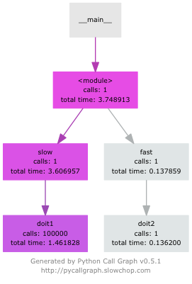

System Development with Python
Week 7 :: profiling
Joseph Sheedy
joseph.sheedy@gmail.com
Git repository: https://github.com/UWPCE-PythonCert/Python300-SystemDevelopmentWithPython-Spring-2014
Performance and Profiling
Today's topics
- Determining performance objectives
- Measuring performance a.k.a. profiling
- Performance optimizations
What is software profiling?
The act of using instrumentation to objectively measure the performance of your application
"Performance" can be a measure of any of the following:
- resource use (CPU, memory)
- frequency or duration of function calls
- wall clock execution time of part or all of your application
Collecting this data involves instrumentating the code. In Python, this happens at runtime.
The instrumentation creates overhead, it will affect performance
The output data (a "profile") will be a statistical summary of the execution of functions
An optimization strategy
- Write the code for maintainability / readability
- Test for correctness
- If it is too slow, profile. Else quit
- Optimize the most expensive parts based on profiling data
- Repeat from 2)
http://c2.com/cgi/wiki?PrematureOptimization http://c2.com/cgi/wiki?ProfileBeforeOptimizingProgrammers waste enormous amounts of time thinking about, or worrying about, the speed of noncritical parts of their programs, and these attempts at efficiency actually have a strong negative impact when debugging and maintenance are considered. We should forget about small efficiencies, say about 97% of the time: premature optimization is the root of all evil. Yet we should not pass up our opportunities in that critical 3%.
-Donald Knuth
Big O notation
The efficency of an algorithm is often described in “big O” notation.
It describes how an algorithm behaves in terms of resource use as a function of amount of input data
O(1) - Execution time stays the same regardless of how much data.
Example: adding to dicts
O(n) - Time goes up linearly with number of items.
Example: scanning lists
O(n2) - Time goes up quadratically with number of items.
Example: bubble sort, worst case
O(log(n)) - goes up with the log of number of items
Example: bisection search
Big O notation
chart generated with examples/notebooks/Big_O.ipynb :

time.clock() / time.time()
Using the time module as a profiling decorator
import time
def timer(func):
def timer(*args, **kwargs):
t1 = time.time()
result = func(*args, **kwargs)
t2 = time.time()
print "-- executed %s in %.4f seconds" % (func.func_name, (t2 - t1))
return result
return timer
@timer
def expensive_function():
time.sleep(1)
@timer
def less_expensive_function():
time.sleep(.02)
expensive_function()
less_expensive_function()timeit
Used for testing small bits of code
Use to test hypotheses about efficiency of algorithms and Python idioms
Can be run from the command line:
python -m timeit '"-".join(str(n) for n in range(100))'timeit command line interface
options
- -nN: execute the given statement N times in a loop. If this value is not given, a fitting value is chosen.
- -rR: repeat the loop iteration R times and take the best result. Default: 3
- -t: use time.time to measure the time, which is the default on Unix. This function measures wall time.
- -c: use time.clock to measure the time, which is the default on Windows and measures wall time. On Unix, resource.getrusage is used instead and returns the CPU user time.
- -pP: use a precision of P digits to display the timing result. Default: 3
$ python -m timeit -n 1000 -t "len([x**2 for x in range(1000)])"
timeit
Or imported as a module
http://docs.python.org/2/library/timeit.html#timeit.timeit
timeit.timeit(stmt='pass', setup='pass', timer=<default timer>, number=1000000)
import timeit
statement = "char in text"
setup_code = """text = "sample string";char = "g" """
timeit.timeit(statement, setup=setup_code)
Or with iPython magic
%timeit pass
u = None
%timeit u is None
%timeit -r 4 u == None
import time
%timeit -n1 time.sleep(2)
%timeit -n 10000 "f" in "food"
The results of timeit and %timeit are different, why?:
In [12]: timeit("u is None")
100000000 loops, best of 3: 15.9 ns per loop
In [13]: %timeit u is None
10000000 loops, best of 3: 51.4 ns per loop
Exercise!
We just tried determining if a character exists in a string:
statement = "'f' in 'food'"
timeit.timeit(statement)
Run timeit with an alternative statement:
statement2 = "'food'.find('f') >= 0"
timeit.timeit(statement2)
Which is faster? Why?
Getting more detailed with Profiling
A profiler takes measurements of runtime performance and summarizes results into a profile report
Reported metrics could include
- Memory used over time
- Memory allocated per function
- Frequency of function calls
- Duration of function calls
- Cumulative time spent in subfunction calls
Python's builtin profiler
Python comes with a few profiling modules
- profile - older, pure Python. If you need to extend the profiler, this might be good. Otherwise, it's slow.
- cProfile - same API as profile, but written in C for less overhead
- hotshot - deprecated, still used sometimes. Emphasis on low overhead.
cProfiler
python -m cProfile integrate_main.py
11111128 function calls in 8.283 seconds
Ordered by: standard name
ncalls tottime percall cumtime percall filename:lineno(function)
1 0.000 0.000 0.000 0.000 integrate.py:1()
11111110 2.879 0.000 2.879 0.000 integrate.py:1(f)
[....] - ncalls: number of calls
- tottime: total time spent in function, excluding time in sub-functions
- percall: tottime / ncalls
- cumtime: total time spent in function, including time in sub-functions
- percall: cumtime / ncalls
- filename:lineno: location of function
Analyzing profile data
output to a binary dump with -o <filename>
While doing performance work, save your profiles for comparison later
This helps ensure that any changes do actually increase performance
A profile dump file can be read with python -m pstats
python -m pstats
% read prof_dump
prof_dump% stats
or
import pstats
p = pstats.Stats('prof_dump')
p.sort_stats('calls', 'cumulative')
p.print_stats()
# p.sort_stats??
# p.sort_stats('time')
qcachegrind / kcachegrind
profiling tool based on Valgrind
a runtime instrumentation framework for Linux/x86
Can be used with Python profile data with a profile format conversion
Doesn't give all the information that a native valgrind run would provide
# convert python profile to calltree format
pip install pyprof2calltree
python -m cProfile -o dump.profile integrate_main.py
pyprof2calltree -i dump.profile -o dump.callgrind
http://kcachegrind.sourceforge.net/cgi-bin/show.cgi/KcacheGrindCalltreeFormat
Run Snake Run
A graphical profile viewer for Python
# on Mac, it's easier to install wxPython via native installer and install runsnakerun into your system Python
# then run the runsnake32 wrapper:
# runsnake32 dump.profile
# or on Linux:
runsnake dump.profile
line profiler
line_profiler is a module for doing line-by-line profiling of functions
ships with a script, kernprof.py
Now decorate the function you want to profile with @profile and run
% kernprof.py -l -v agg.py
http://pythonhosted.org/line_profiler/
pycallgraph
Python Call Graph is a Python module that creates call graph visualizations
pycallgraph graphviz ./agg.py
boosting Python performance
- Overhead in function/method runtime lookup can be significant for small frequent calls. inlining code or caching function references might help
- Python string handling idioms: use "".join(list_of_strings) rather than sequential calls to +=
- using list comprehensions, generator expressions, or map() instead of for loops can be faster
- Rewrite expensive code in C (or Cython!)
- Leverage existing C extension libraries, for instance Numpy.
Managing memory
Don’t forget memory:
Processors are fast
It often takes longer to push the memory around than do the computation
So keep in in mind for big data sets:
Use efficient data structures: array.array, numpy
Use efficient algorithms ( O(log n) )
Use generators, rather than lists: xrange, ...
Use iterators to pull in the data you need from databases, sockets, files, ...
Instrumenting middleware
Python web applications or frameworks commonly communicate with web servers via the Web Server Gateway Interface (WSGI)
WSGI is a simple protocol which separates application code from web servers and allows the creation of agnostic middleware
This middleware is a good place to hook into application logic
WSGI
The WSGI interface has two sides, the "server" side and the "application" side.
The application provides a callable object to the server
A "callable" object is any object which defines a __call__ method
The Application side of WSGI
def simple_app(environ, start_response):
"""Simplest possible application object"""
status = '200 OK'
response_headers = [('Content-type', 'text/plain')]
start_response(status, response_headers)
return ['Hello world!\n']
frameworks with WSGI support:
http://wsgi.readthedocs.org/en/latest/frameworks.html
The Server side of WSGI
The server must provide two things: an environ dictionary, and a start_response function.
The environ dictionary needs to have the usual things present -- it's similar to the CGI environment.
start_response is a callable that takes two arguments
- status -- containing a standard HTTP status string like 200 OK
- response_headers -- a list of standard HTTP response headers
The Web server dispatches a request to the framework/app by calling the application:
iterable = app(environ, start_response)
for data in iterable:
# send data to client
It's the framework/app's responsibility to build the headers, call start_response, and build the data returned in iterable.
It's the Web server's responsibility to serve both the headers and the data up via HTTP.
WSGI Middleware
Middleware handles both ends of the protocol, transforming the data as needed.
For instance, an uppercasing WSGI middleware:
class Upperware:
def __init__(self, app):
self.wrapped_app = app
def __call__(self, environ, start_response):
for data in self.wrapped_app(environ, start_response):
return data.upper()
WSGI profilers
New Relic
NEW_RELIC_CONFIG_FILE=newrelic.ini newrelic-admin run-program command options
# cd ~/work/UW_Python/new-relic/foo
NEW_RELIC_CONFIG_FILE=../newrelic.ini newrelic-admin run-program python manage.py runserver
“Debugging is twice as hard as writing the code in the first place. Therefore, if you write the code as cleverly as possible, you are, by definition, not smart enough to debug it.”
- Brian Kernighan
The End
Questions?
/